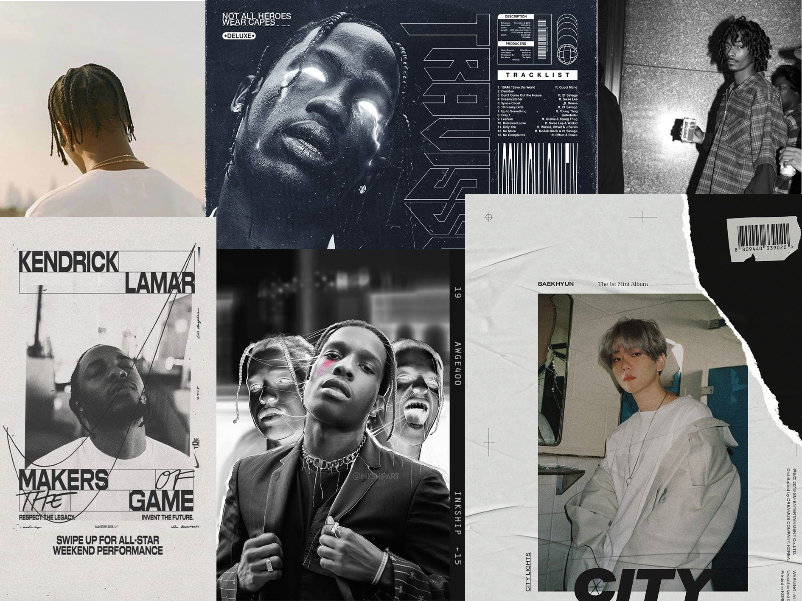

Wat heb ik gedaan?
Ik heb hier 2 moodboards gemaakt voor Lance Priester (een student op de rockacedemie).
Ik ben online naar plaatjes gaan zoeken die ik bij hem vind passen.
Er zijn 2 compleet verschillende stijlen die ik toch allebei bij hem horen naar mijn mening.
Het eerste moodboard die je hier links ziet zie je veel zwart-wit in terug. Dit heb ik gekozen, omdat de muziek van Lance vaak ook donker is.
De tweede moodboard is juist heel trippy en explosief. Toch vind ik het ook bij Lance passen, omdat naast zijn donkere muziek hij ook een trippy vibe heeft.
Wat heb ik geleerd?
Ik heb hierbij geleerd om het gevoel dat je bij een bepaald persoon krijgt, om te zetten in beeld.
In dit geval door afbeeldingen die hetzelfde gevoel geven bij elkaar te zoeken.
Ik heb ook geëxpirimenteerd met adobe photoshop om de afbeeldingen op een mooie grootte te krijgen en te laten overlappen zodat het in het frame past
Wat kon beter?
Meer afbeeldingen proberen bij elkaar te zetten. Meer verschillendde moodboards maken. Meer bronnen gebruiken voor de afbeeldingen
Feedback
De afbeeldingen in de moodboards zijn alleen personen afgebeeld. De bedoeling van moodboards zijn verschillende voorwerpen gebruiken die je hetzelfde gevoel meegeven.
Om alleen dezelfde soort personen en kleuren te gebruiken geef je een minder goede indicatie van wat je wilt overbrengen met die afbeeldingen.